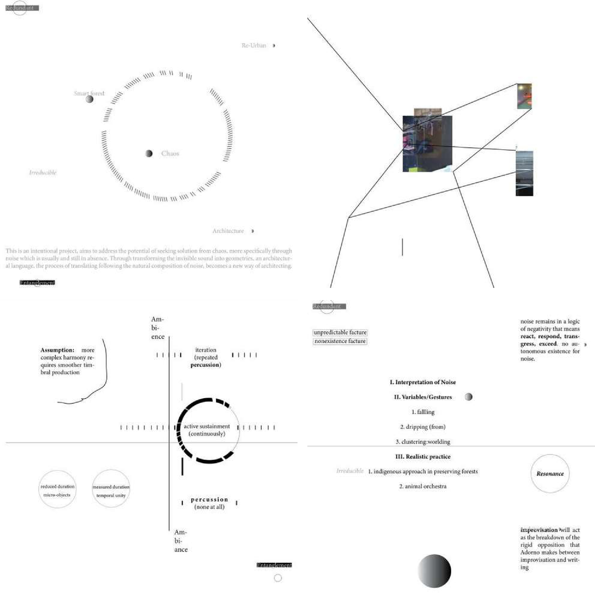

Post-Humanitarian Infrastructure
We see weaponized computational structure in humanitarian system planning and mapping. By interpreting governmental construction of identity-based zoning, we counter extractivist surveillance with decentralized community building through experimental governance and visceral creations.


Agile Aesthetics Beyond Stacks
Mapping the Financial Relational Layer: Navigating the friction between infrastructure and human labor. We prioritize visceral data—memory, tears, and organic rhythms—to bypass the financialized direction of institutional governance.


Decentralize Professionalism
ETE decodes the "professionality" of data used by elites to maintain opacity. By asserting Open Source Agency over planetary infrastructure, we transform hidden complexities into accessible co-creation tools.


International Sky Hub
Utilizing aerial developmental and UFO investigative aesthetics to mask subversive infrastructural movements. Decentralized drone aid bypasses browser-based agency loss in the new Chinese and US sky eras.